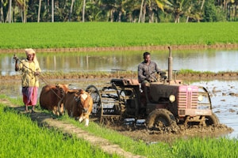

Agriculture in Action


AgriTech connects Farmers, Buyers, Equipment Suppliers, and Grocery Sellers to revolutionize India's agricultural ecosystem with smart solutions and seamless collaboration.
Direct access to buyers, fair pricing, and modern equipment rental services to maximize your harvest potential.
Source fresh produce directly from verified farmers with transparent pricing and quality assurance.
Expand your reach and connect with farmers who need modern agricultural equipment and services.
Access fresh produce supply chain with competitive rates and reliable delivery systems.
Join thousands of farmers, buyers, and suppliers who are already benefiting from our platform.
Get Started Today